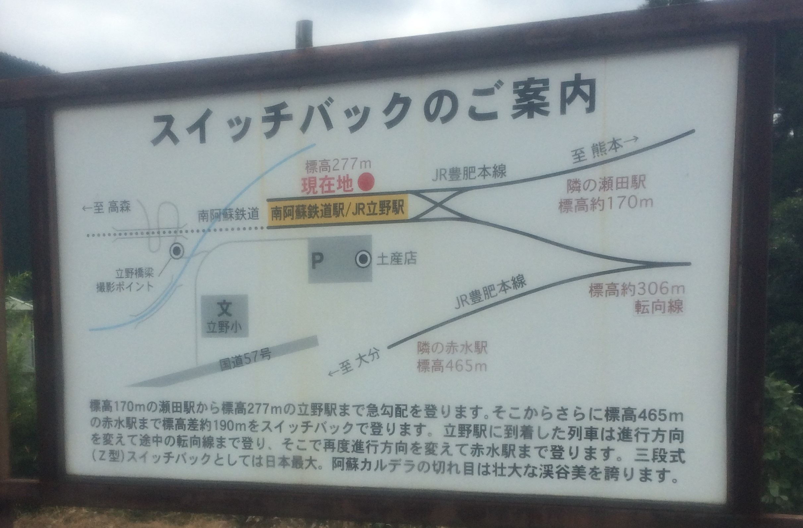
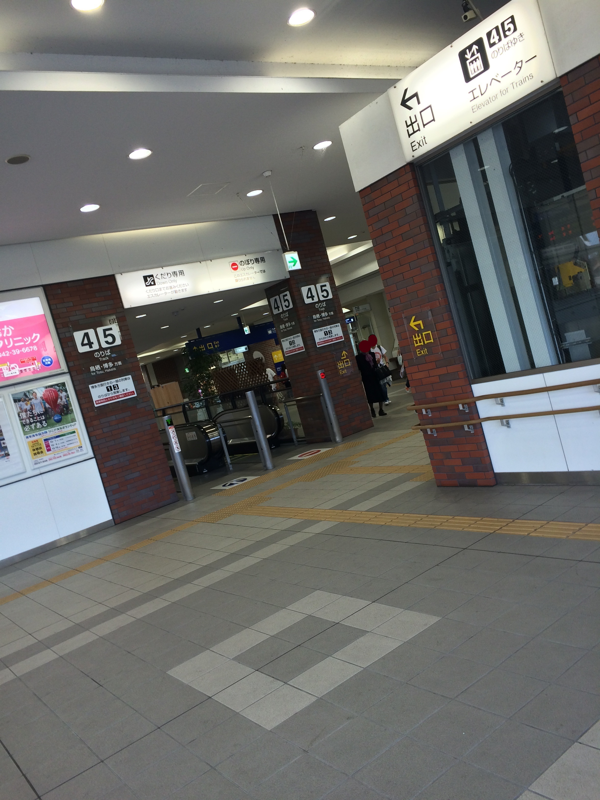
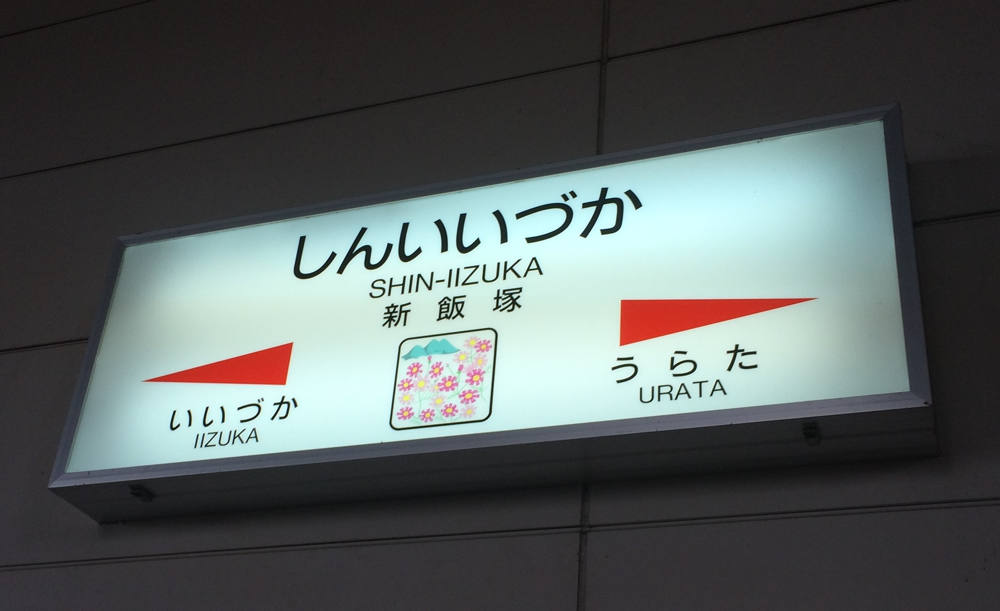

この路線は，福岡県の小倉駅から，大分県，宮崎県を経由して，鹿児島県の鹿児島駅までを結ぶ路線です． 東九州の重要な幹線として，人員や貨物輸送を行っています． 大分県内では，特急のソニックやにちりんと815系，415系の普通列車が主に運用されています． 下の画像は，大分県最南端の駅である宗太郎駅の駅名標です． この駅では一日に三本しか列車が止まらず，秘境駅として一部の人達の中で有名な駅です．

この路線は，福岡県の久留米駅から日田を経由して大分駅までを結ぶ路線です． 別名「ゆふ高原線」とも呼ばれ，沿線には日田，由布院などの観光地があり，特急ゆふいんの森が人気です． 下の画像は，由布院駅の駅表です．大分県でも有数な温泉地で，観光客が多く乗り降りしています． 「驛」という文字は「駅」の旧字体で，レトロな雰囲気を醸し出しています．

この路線は，熊本県の熊本駅から，大分駅までを結ぶ路線です． 別名「阿蘇高原線」とも呼ばれ，その名の通り阿蘇を通る観光路線です． また，大分市や熊本市への通勤通学路線としても使われています． この路線には，スイッチバックと呼ばれる運転が行われます． スイッチバックとは，険しい斜面を登り降りするときに使われる方法で，一度または複数回進行方向を変えながら坂を超えてゆくというものです． 下の画像は，立野駅にあるスイッチバックの説明書きです．この駅と，坂を登った先の二回方向転換をします．
この路線は，福岡県の城野駅から，福岡県田川市を経由して，大分県の夜明駅を結ぶ路線です． この路線で大分県に存在する駅は夜明，今山，大鶴の3つだけであり，大鶴駅のとなりの宝珠山駅は福岡県と大分県にまたがる点で珍しい駅です． 下の画像は宝珠山駅です．見てわかるように県境の駅ということが大きく宣伝されています．

この路線は，福岡県の門司港駅から，熊本県の八代駅，そして，鹿児島県の川内駅から鹿児島駅までを結ぶ路線です． 八代駅と川内駅の間は，新幹線開通によって第三セクターの肥薩おれんじ鉄道が管理する路線となっています． この路線は，小倉駅や博多駅を通る路線で，非常に乗降車数が多いです． 下の画像は，久留米駅構内の写真です．この場所は，今回の旅行の中でのお気に入りです．
この路線は，篠栗線と，筑豊本線の一部，それから鹿児島本線の一部を結ぶ路線の愛称です． この路線には「筑前大分駅」という駅があり，おそらく大分県民の大多数が「ちくぜんおおいた」と読んでしまいそうな「ちくぜんだいぶ」駅があります． 下の画像は，今回の旅行で乗換駅として利用した新飯塚駅の駅名標です．
